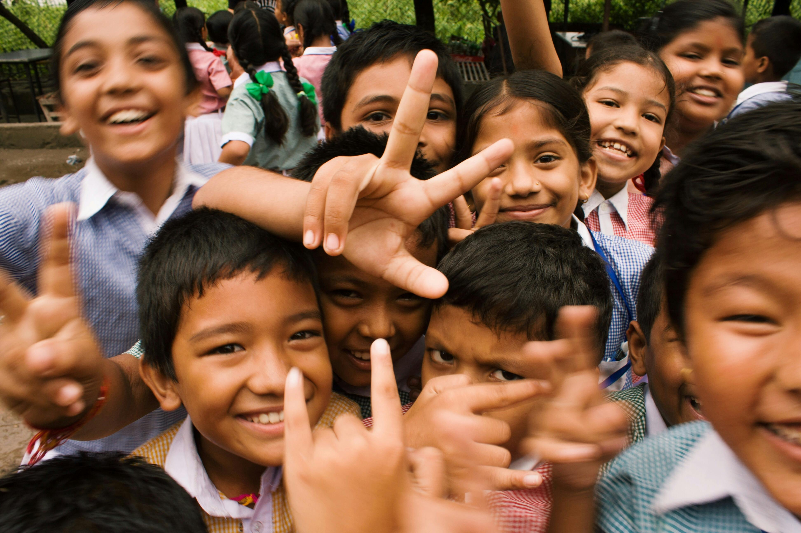

üåü Turning Ideas Into Reality
Your child can learn to build websites that reflect their imagination — from blogs to portfolios to game pages. Website creation lets them bring their creativity to life in the real digital world.
üí° A Skill That Builds Confidence
Every child wants to feel smart, seen, and capable. When they create a real website — and show it to their friends and family — they feel empowered. This boosts their confidence like nothing else.
üåç Preparing Them for the Future
Web development is one of the most in-demand skills in the world today. By starting early, your child is not just catching up — they are getting ahead. They'll be ready to lead in a digital world.

ü߆ Boosting Problem Solving & Creativity
Building a website teaches logical thinking, design, storytelling, and real problem-solving. It’s fun and challenging — perfect for developing a sharp and creative mind.
üíµ Ready to Invest in Their Future?
Enroll your child in Royal Heights' Website Creation Class and give them the tools to thrive in tech, school, and life.
⬅️ Go Back to Main Page Learn about adrino and robotics